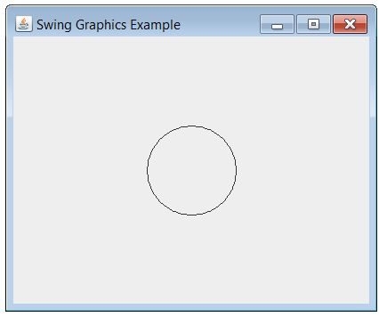
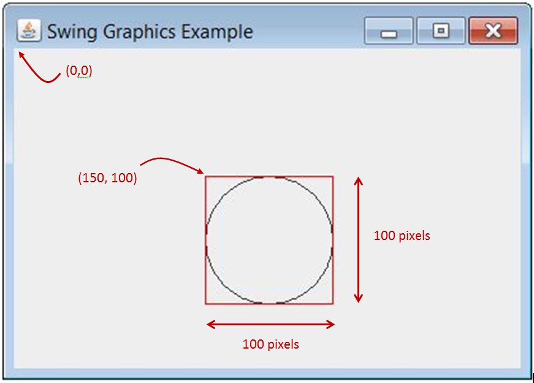

Drawing in Swing
The second checkpoint is a somewhat whimsical application of inheritance that involves drawing simple pictures. To draw pictures in Java we use a framework called Swing. The main purpose of Swing is to create GUIs, so there are many classes representing controls such as buttons and menus, but it is also possible to simply create a blank window and issue commands to draw things.
The basic mechanism is pretty simple once you know about inheritance: you create a subclass of the class JPanel, and then override the method paintComponent. You can see this illustrated in the very short application SwingGraphicsExample.java. Here is the paintComponent method:
public void paintComponent(Graphics g)
{
g.drawOval(150, 100, 100, 100);
}

Here is how to make sense of the numbers in the call to drawOval. The panel is a rectangular grid of pixels, or dots. In this example, we are setting the panel size to 400 wide by 300 high. The upper-left corner is (0, 0). A shape is specified by its "bounding box", shown as a red square below. The first two numbers are the coordinates of the upper-left corner of the bounding box. The third and fourth numbers are the width and height.

You can experiment with other methods of the class
java.awt.Graphics
to see how to draw lines and rectangles and so on. Just add your code to the paintComponent method.
There are two dozen more lines of code in this example, but there is no real need to read them unless you are curious. They are just "boilerplate" code for creating the window and putting our panel in the window, which takes place in the static method createAndShow. Then the main method starts everything up by adding the createAndShow method to the framework's event queue. These steps are pretty much the same for all Swing applications.
Further references
Graphics and GUIs are outside the scope of this course, so we emphasize that you are not going to be tested on this material. They do provide some good examples of the use of polymorphism, and they are kind of fun to play with.
If you are interested in seeing an example that uses some GUI controls rather than drawing pictures, check out the example
FirstSwingExample.java.
There also a collection of Swing examples on Steve's web page.
For a comprehensive reference on Swing, there is nothing better than the official Swing tutorials from Sun/Oracle.